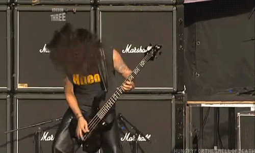
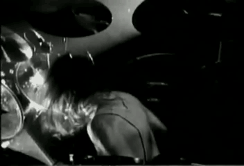
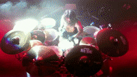
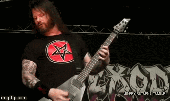

Kerry King is an American musician, best known for being the guitarist and songwriter of thrash metal band Slayer. He co-founded the band with Jeff Hanneman in 1981 and remained a member for nearly four decades.
King was born in Los Angeles, California. His father was an aircraft parts inspector, and his mother worked for a telephone company. King attended Warren High School in Downey, California, and started learning guitar at Calvano's Music in South Gate.
In 1981, King was at an audition trying out for the position of guitarist when he approached Jeff Hanneman, who was playing guitar at the reception desk, and said they should jam together and see if they liked playing together. King and Hanneman subsequently decided to start their own band, which would soon evolve into Slayer. King, along with bassist/vocalist Tom Araya, remained in Slayer for the entire length of the band's career, from 1981 to 2019.
In 1984, King was invited by Dave Mustaine to join another Thrash Metal band, Megadeth. Although King did agree to partake in many gigs with them, he ultimately did not join full time due to his commitment to Slayer.
King has a trademark personal appearance and extensive tattoos all over his arms and head. His tattoo was praised to such a degree by Blender Magazine that they once produced a tour of his body ink. King's abbreviation, KFK, was revealed to mean "Kerry Fuckin' King" in the January 2007 Issue of Guitar World.
By 2015, King had resided in Riverside County, California.[8] In April 2020, King and his wife bought one home in Las Vegas, Nevada, and they are residing there.
JEFF HANNEMAN
GUITARS (1981–2013; DIED 2013)
Jeff Hanneman was an American musician, best known as a founding member and co-lead guitarist of the American thrash metal band Slayer. Hanneman composed both music and lyrics for every Slayer album until his death in 2013 at age 49.
Hanneman was born January 31, 1964 in Oakland, California, and grew up in Long Beach, California in a family containing several war veterans: his father fought in Normandy during World War II and his brothers in Vietnam, making warfare a common conversation topic at the dinner table. War films were popular on TV at the time, and Hanneman often joined his brothers in constructing and coloring tank and plane models. His interest in warfare and military history has been attributed to his upbringing.
In a 2009 interview with Decibel magazine, he stated his father is German, but fought for the Allied side in World War II. In the same interview, he also goes into detail of what district of Germany his father and grandparents hail from. His grandfather was fluent in German
In 1981, Hanneman, who was working as a telemarketer at the time, met Kerry King, when King was auditioning for a southern rock band called "Ledger". King remembered: "As I was leaving, I saw Jeff just kinda standing around playing guitar, and he was playing stuff that I was into, like Def Leppard's 'Wasted' and AC/DC and Priest". After the try-out session, the two guitarists started talking and playing Iron Maiden and Judas Priest songs. Slayer was born when King asked "Why don't we start our own band?", to which Hanneman replied "..Fuck yeah!"
In early 2011, Hanneman contracted necrotizing fasciitis. Reports linked this illness with a spider bite he claimed to have received while in a friend's hot tub.
In light of his illness and Slayer's upcoming participation in the Australian Soundwave Festival tour that was set to begin on February 26, 2011, the band made the decision to play the dates without Hanneman, and on February 16, 2011, brought on Gary Holt (Exodus) to fill in for him. Pat O'Brien (Cannibal Corpse) joined as Slayer's temporary second guitarist when Holt left the tour to play with Exodus. In 2012, bandmate Tom Araya announced a recovery from the disease. However, in February 2013, King revealed that Hanneman was still battling health issues that prevented him from performing.
Hanneman died of liver failure on May 2, 2013, in a Southern California hospital near his home. On May 9, 2013, the official cause of death was announced as alcohol-related cirrhosis. Hanneman and his family had apparently been unaware of the extent of the condition until shortly before his death.

TOM ARAYA
BASS,VOCALS (1981–2019)
Tom Araya is a Chilean-American musician, best known as the vocalist and bassist of American thrash metal band Slayer. Araya is ranked fifty-eighth by Hit Parader on their list of the 100 Greatest Metal Vocalists of All Time.
Araya was employed as a respiratory therapist in the early 1980s and used his earnings to finance Slayer's debut album Show No Mercy. Much of Araya's lyrical content is about serial killers, a subject he finds interesting; his first credited lyrical contribution was the vampire-themed track "At Dawn They Sleep" from 1985's Hell Awaits.
Tomás Enrique Araya Diaz was born in Viña del Mar, Chile, but his family moved to the US when he was five. He grew up in Los Angeles. His older brother, Cisco, played guitar. This inspired Araya to pick up bass at age eight. The two played Beatles and Rolling Stones songs, which he would later cite as an influence on his own music.
In the early 1980s, Araya's eldest sister suggested he enroll in a program to become certified as a respiratory therapist. Araya's father insisted he either find a job or enroll in the course. Araya enrolled in a two-year technical course, learning about air mixture ratios, drawing blood, and how to intubate.
In 1981, Araya was approached by Kerry King, who asked Araya to join his band, Slayer. Araya accepted, using his earnings as a respiratory therapist to finance the band's 1983 debut album Show No Mercy. Araya requested time off of work from his employer, the Brotman Medical Center, for Slayer's first European tour in 1984 and was denied; "'We need you to come in today.' They'd call me at 5:00 in the morning and wake me, 'Someone's not coming in, we need you to come in to work.'" After a month of sporadic attendance, his employers threatened termination; Araya replied "Well, I guess I'm fired." Along with King, Araya was one of the two original members to remain in Slayer for the entire length of the band's career, from 1981 to 2019.
In 2006, Araya underwent gallbladder surgery, which disrupted The Unholy Alliance tour. Originally set to launch on June 6, the tour was postponed to June 13. Araya was also unable to finish the vocals for a song entitled "Final Six," which was to be included on Slayer's 2006 album Christ Illusion; later released on the special edition of the album.[5] Araya brought his children on the tour stating "it's kind of cool to expose them at such a young age. My first concert, I was, like, 17."We have been fortunate- fortunate enough to have lasted as long as we have because a lot of bands don't last that long."

DAVE LOMBARDO
DRUMS(1981–1986, 1987–1992, 2001–2013)
David Lombardo (born February 16, 1965) is a Cuban-American drummer, best known as a co-founding member of American thrash metal band Slayer. Lombardo played drums on nine Slayer albums, including, Reign in Blood (1986) and Christ Illusion (2006). He received critical praise for both of these albums.Lombardo's music career has spanned forty years, during which he has been involved in the production of thirty-five commercial recordings covering a number of genres. He has performed with numerous bands, including Grip Inc., Philm, Fantômas, Testament, and Suicidal Tendencies, in addition to Slayer.Lombardo is currently playing drums with Fantômas, Suicidal Tendencies, Dead Cross, Mr. Bungle and the Misfits.
Lombardo is widely known as an aggressive heavy metal drummer. His drumming has been praised as "astonishingly innovative".Drummerworld named him "the Godfather of Double Bass". He has had a significant influence on the metal scene and inspired modern metal drummers, particularly extreme metal drummers.
When he was sixteen, Lombardo's friends told him about a guitar player, Kerry King, who lived a few blocks away. Lombardo dropped by King's house to meet him. Lombardo introduced himself, mentioned he played drums and shared that he wanted to start a band. King jammed with Lombardo and later showed Lombardo his guitar collection. The two quickly realized they shared some of the same musical interests. After rehearsing in Lombardo's garage several times, King introduced the drummer to another guitarist named Jeff Hanneman. The three rehearsed several times before they decided they needed a singer and bass player. King had previously played with Tom Araya in a band called Quits and decided to introduce Araya to Lombardo and Hanneman.
With Slayer's line-up now complete, Lombardo stabbed out the now iconic logo and the band began to develop their groundbreaking sound.

PAUL BOSTAPH
DRUMS(1992–1996, 1997–2001, 2013–2019)
Paul Steven Bostaph (born March 4, 1964) is an American heavy metal drummer, best known as a member of the thrash metal band Slayer, initially from 1992 to 2001 and again from 2013 to 2019. His drumming career began in 1984, when he was 20 years old, and other than Slayer, he has worked with other bands such as Forbidden, Exodus, Systematic, Testament, and BlackGates. Metal-Rules.com describes Bostaph as "a true professional and one of the best drummers on today's metal music scene."
Following the departure of Slayer drummer Dave Lombardo in 1992, the band was looking for a new drummer. Lombardo's drum tech was filling in but constantly made errors. After auditioning several drummers and listening to hundreds of demo tapes, Bostaph was recommended by Slayer guitarist Kerry King's guitar technician. Slayer members listened to Forbidden records, however, they did not see how Bostaph could fit into the Slayer momentum – Lombardo's style being "over the top", while Forbidden was more melodic. Slayer auditioned Bostaph with nine songs, and he made only one error on "Angel of Death". Bostaph had to continually practice to improve the strength of his hands and feet; "I respected and loved Dave's drumming but as a fan, if they got a new drummer and I bought a ticket to a show, I would expect to hear the stuff that Dave does, that's what I would want. So, I went in and every time I had to learn a new song I would play them exactly how Dave played them".
Bostaph recorded four albums with Slayer and departed from Slayer after the release of God Hates Us All, following a chronic elbow injury he had sustained that would hinder his ability to play.
On May 30, 2013, Slayer announced via their official Facebook page that Paul Bostaph had returned once again to replace long-time member Dave Lombardo behind the kit on a full-time basis.[15] He appeared on Slayer's eleventh and final studio album Repentless, and stayed with the band until 2019.

GARY HOLT
GUITARS (2013–2019;TOURING MUSICIAN 2011–2013)
Gary Wayne Holt (born May 4, 1964) is an American musician from the San Francisco Bay Area. He is a guitarist, the bandleader, and the main songwriter for thrash metal band Exodus and was a member of Slayer from 2011 to 2019, replacing Jeff Hanneman following his death in May 2013.
On February 12, 2011, it was announced that Holt would be temporarily filling in for Jeff Hanneman in the band Slayer.
Holt also played with Slayer for the Big 4 Concert in Indio, California on April 23, 2011, as well as Fun Fun Fun Fest in Austin, Texas on November 6, 2011.
Holt was later confirmed to be a permanent member of Slayer, following Hanneman's death on May 2, 2013, and stayed with the band until their split, following the conclusion of their 2018–2019 farewell tour.
He also recorded guitar tracks on Slayer's 2015 album Repentless, but did not have any writing contributions on the album, except for guitar solos.
TOURING MUSICIANS
1.JOHN DETTE DRUMS (1996–1997; TOURING MUSICIAN 2013)
2.TONY SCAGLIONE DRUMS (1986–1987)
3.PAT O' BRIEN GUITARS 2011)
4.PHIL DEMMEL GUITARS (2018)